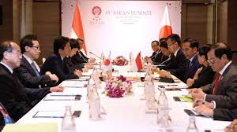

Kerjasama Multilateral di Bidang Lingkungan dan Perubahan Iklim
Kerja sama multilateral di bidang lingkungan dan perubahan iklim adalah upaya kolektif yang dilakukan oleh negara-negara di dunia untuk mengatasi tantangan global yang muncul akibat degradasi lingkungan dan perubahan iklim. Masalah ini membutuhkan kolaborasi internasional karena dampaknya bersifat lintas batas dan memengaruhi seluruh planet.

Tujuan Kerja Sama Multilateral di Bidang Lingkungan
Mengurangi Emisi Gas Rumah Kaca
Membatasi emisi yang menyebabkan pemanasan global, seperti karbon dioksida (CO₂) dan metana (CH₄).
Melindungi Keanekaragaman Hayati
Memastikan kelestarian flora, fauna, dan ekosistem yang terancam oleh aktivitas manusia.
Meningkatkan Ketahanan terhadap Perubahan Iklim
Membantu negara-negara beradaptasi terhadap dampak perubahan iklim, seperti kenaikan permukaan air laut dan cuaca ekstrem.
Mempercepat Transisi ke Energi Terbarukan
Mengurangi ketergantungan pada bahan bakar fosil dan mendorong penggunaan sumber energi bersih.
Mengatasi Polusi dan Degradasi Lingkungan
Mengurangi polusi udara, tanah, dan air serta mengatasi masalah deforestasi dan desertifikasi.
Manfaat Kerja Sama Multilateral di Bidang Lingkungan
Mengatasi Isu Lingkungan Secara Global
Isu perubahan iklim dan polusi tidak mengenal batas negara. Kerja sama memungkinkan solusi terpadu.
Pendanaan dan Teknologi bagi Negara Berkembang
Memastikan negara-negara miskin dan berkembang mendapatkan bantuan untuk melawan dampak perubahan iklim.
Melindungi Ekosistem Global
Memastikan keberlanjutan sumber daya alam bagi generasi mendatang.
Meningkatkan Kesadaran dan Komitmen Internasional
Menjadikan isu lingkungan sebagai prioritas di agenda global.